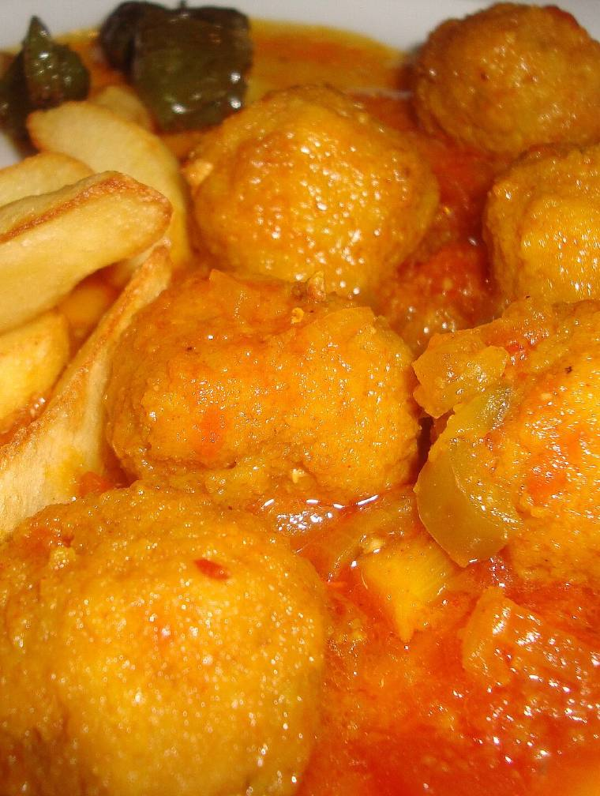

Cuisine espagnole

Cuisine espagnole
Albóndigas de la abuela
Boulettes de grand-mère
Préparation : 30 min
Cuisson : 35 min
Ingrédients (pour 4 personnes)
- 350 g de bœuf haché
- 350 g de porc haché
- 1 oignon
- 1 gousse d’ail
- 1 tranche de pain de mie
- 1 œuf
- 3 cuillères à soupe de farine
- 10 cl de vin blanc
- 15 cl d’huile d’olive
- 2 brins de thym
- persil, sel, poivre
Quantités adaptées. Les temps de cuisson ne sont pas recalculés.
- Revenir ail et moitié de l’oignon dans un peu d’huile.
- Les mêler aux viandes avec œuf, pain émietté, persil, sel et poivre. Façonner, fariner.
- Dorer les boulettes dans l’huile, les mettre en cocotte.
- Blondir le reste d’oignon, ajouter un peu de farine, déglacer au vin, verser sur les boulettes.
- Ajouter 10 cl d’eau et le thym, mijoter couvert 20 minutes.
D’après Spain.info, office espagnol du tourisme. Traduit et reformulé, tasses converties en centilitres.